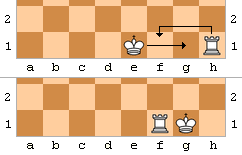
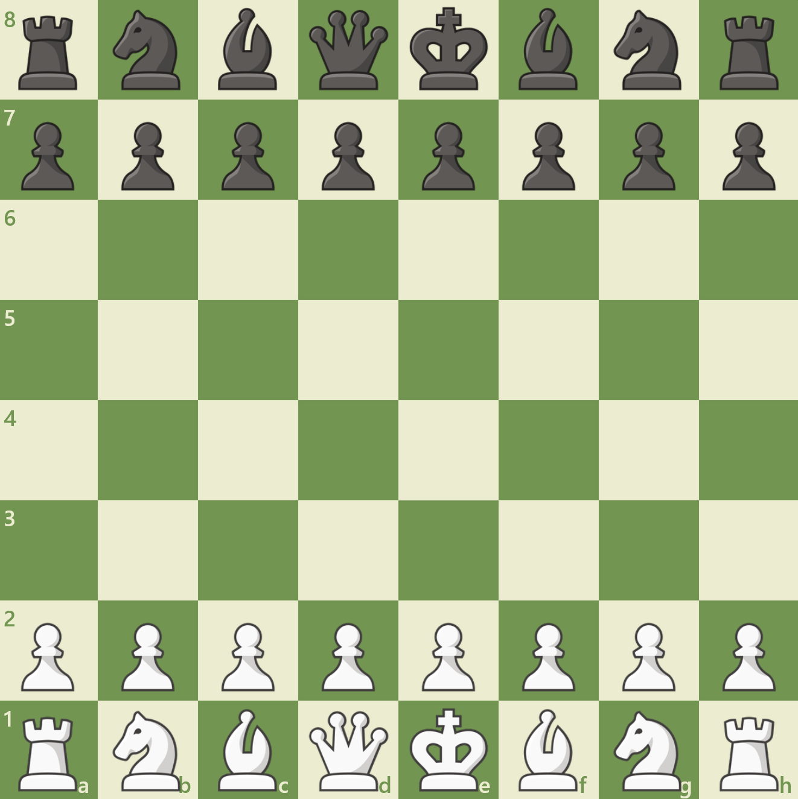

en Passant
Beim en Passant kann man wenn ein Bauer des gegners 2 felder von der Grundlinie aus voraus geht, und man einen Bauer
der eigenen Farge 2 reihen vor der grundlinie des gegners und links oder rechts neben des vortretenden bauer hat.
Dann kann man den gegnerischen Bauern schlagen als wäre der vortretende bauer diagonal vor dem eigenen steht,
obwohl diese nebeneinander stehen.

Rochade
bei der rochade geht mann mit dem könig 2 felder nach links oder nach rechts vom ausgangsfeld des Königs aus
und dann mit dem turm von der jeweiligen ecke euf der anderen seite neben dem könig. Man unterscheidet zwischen
große (notation O-O-O) und kleine (notation O-O) Rochade. Die Regel dabei ist, dass weder der Turm noch der
könig sich einmal bewegt haben darf. UNF der könig sowie die felder über die er gehen wird dürfen von kener
gegnerischen Figur angegriffen sein.

Das Schachbrett
Das Schachbrett hat 64 felder. Mann kann ein bestimmtes feld über dessen Koordinate "anschprechen".
die "linien" werden horizontal mit buchstaben unterschieden und vertikal mit zahlen untrschieden. Bsp. A3
Die Figuren werden wie folgt aufgestellt. auf der der 2. und 7. Linie stehen die jeweiligen bauern. In den Ecken
stechgen die 4 Türme, daneben die Springer und daneben die Läufer. Auf D1 und D8 stehen die jeweiligen Damen,
und auf E1 und E8 Stehen die Könige.

Magnus Carlsen (Weltmeister)
Magnus Carlsen, geboren am 30. November 1990 in Tonsberg, Norwegen, ist ein norwegischer Schachgroßmeister und der
amtierende Schachweltmeister. Carlsen zeigte schon in jungen Jahren außergewöhnliche Schachfähigkeiten und wurde im
Alter von 13 Jahren Großmeister, was ihn zu einem der jüngsten Großmeister in der Geschichte des Schachs machte.
Carlsen erlangte internationale Bekanntheit, als er 2010 die Nummer eins der Weltrangliste erreichte und damit der
jüngste Spieler wurde, der jemals diese Position innehatte. Seine Spielweise zeichnet sich durch eine tiefe strategische
Einsicht, außergewöhnliche Endspieltechnik und eine bemerkenswerte Fähigkeit aus, in scheinbar ausgeglichenen Stellungen
Chancen zu finden.
Im Jahr 2013 gewann Carlsen die Schachweltmeisterschaft, indem er den damaligen Weltmeister Viswanathan Anand besiegte.
Seitdem hat er seinen Titel mehrfach erfolgreich verteidigt, unter anderem gegen Anand, Sergey Karjakin und Fabiano
Caruana. Carlsen ist bekannt für seine Vielseitigkeit und seine Fähigkeit, sich an verschiedene Spielstile anzupassen,
was ihn zu einem äußerst schwierigen Gegner macht.
Neben seinen Erfolgen im klassischen Schach hat Carlsen auch in anderen Schachdisziplinen wie Schnellschach und
Blitzschach große Erfolge erzielt. Er hält mehrere Rekorde, darunter die längste ungeschlagene Serie in der Geschichte
des Schachs, die er von 2018 bis 2020 aufstellte.
Carlsen hat auch außerhalb des Schachs große Popularität erlangt. Er hat in der Modebranche gearbeitet, unter anderem
als Model für G-Star Raw, und hat seine eigene Schach-App, Play Magnus, entwickelt, die es Spielern ermöglicht, gegen
verschiedene Versionen von Carlsen im Laufe seiner Karriere zu spielen.
Magnus Carlsen wird oft als einer der größten Schachspieler aller Zeiten angesehen. Seine Fähigkeit, unter Druck zu
spielen, seine tiefen strategischen Einsichten und seine unermüdliche Arbeitsmoral haben ihm den Respekt und die
Bewunderung der Schachgemeinschaft weltweit eingebracht. Trotz seiner Erfolge bleibt Carlsen bescheiden und konzentriert
sich weiterhin darauf, sein Spiel zu verbessern und neue Herausforderungen zu meistern.